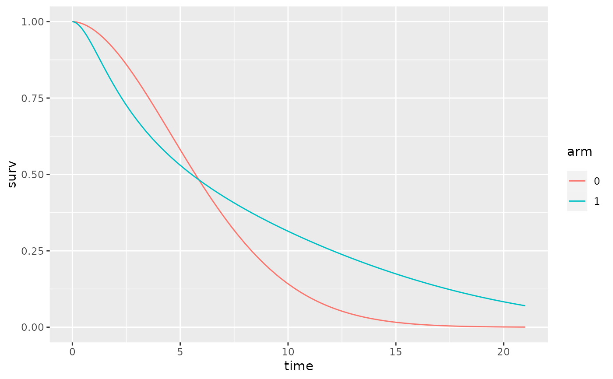

Computes the predicted survivor function for a phpe model.
Usage
# S3 method for class 'survstan'
survfit(formula, newdata = NULL, ...)Examples
# \donttest{
library(survstan)
library(ggplot2)
data(ipass)
ipass$arm <- as.factor(ipass$arm)
fit <- ypreg(Surv(time, status)~arm, data=ipass, baseline = "weibull")
summary(fit)
#> Call:
#> ypreg(formula = Surv(time, status) ~ arm, data = ipass, baseline = "weibull")
#>
#> Yang & Prentice model fit with weibull baseline distribution:
#>
#> Regression coefficients:
#> Estimate Std. Error z value Pr(>|z|)
#> short-arm1 1.361063 0.182368 7.4633 8.44e-14 ***
#> long-arm1 -1.365391 0.082943 -16.4619 < 2.2e-16 ***
#> ---
#> Signif. codes: 0 ‘***’ 0.001 ‘**’ 0.01 ‘*’ 0.05 ‘.’ 0.1 ‘ ’ 1
#>
#> Baseline parameters:
#> Estimate Std. Error 2.5% 97.5%
#> alpha 1.846062 0.060577 1.731071 1.9687
#> gamma 6.961753 0.166121 6.643658 7.2951
#> ---
#> loglik = -2772.375 AIC = 5552.751
newdata <- data.frame(arm=as.factor(0:1))
surv <- survfit(fit, newdata)
ggplot(surv, aes(x=time, y=surv, color = arm)) +
geom_line()

# }